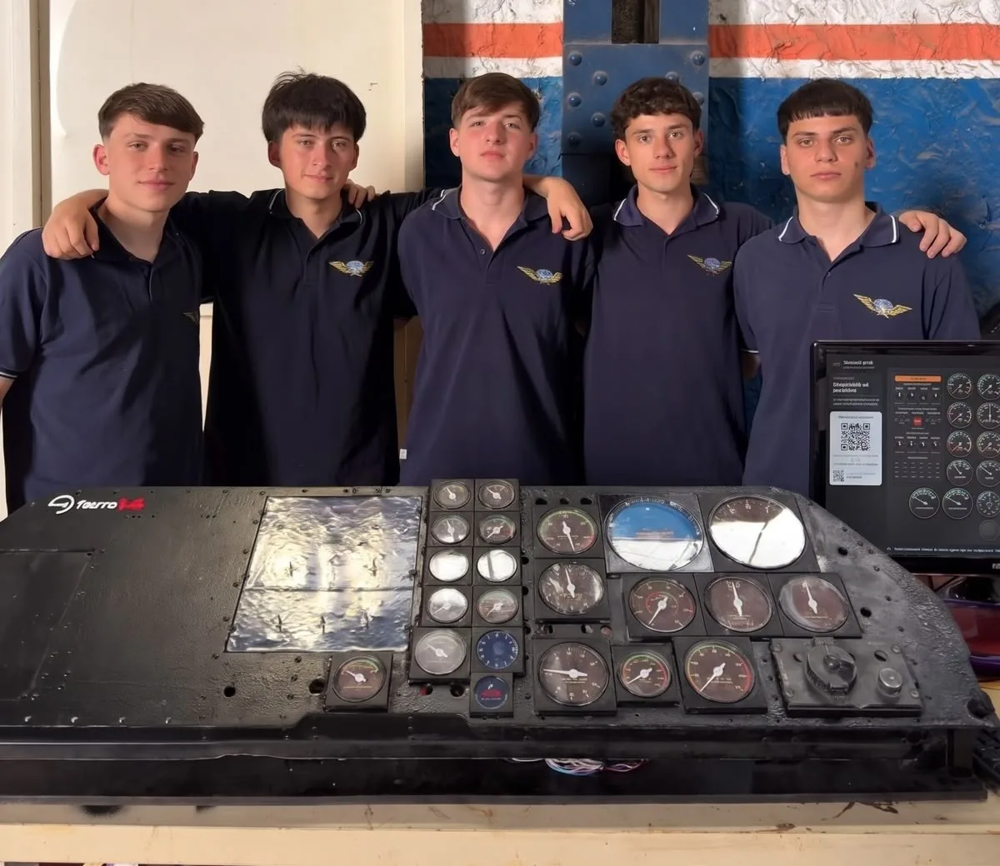
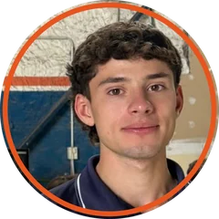
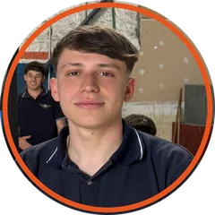
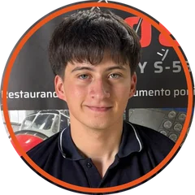
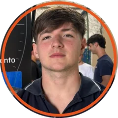
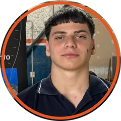

// Restauración Aeronáutica · Quilmes, Buenos Aires · Argentina
Recuperando un helicóptero histórico pieza por pieza — cabina, tablero, instrumentos originales y simulados. Un proyecto de preservación aeronáutica nacido en el Colegio Técnico N°7 IMPA de Quilmes.
// Quiénes somos
Somos estudiantes de 7mo 1era Avionica Comision B del Colegio Técnico N°7 IMPA de Quilmes, provincia de Buenos Aires, unidos por la pasión por la aviación histórica y el trabajo técnico de precisión.
Nuestro proyecto nació en las aulas y talleres de la escuela, donde combinamos los conocimientos técnicos de nuestra formación con el entusiasmo por preservar una aeronave que marcó historia y utilizarla como material didactico.
Creemos que restaurar el pasado es una forma de construir el futuro: cada instrumento recuperado es también una lección de historia, ingeniería y trabajo en equipo.

// El proyecto
// Documentos
// Contacto
¿Te gustaría colaborar con nosotros? Estamos abiertos a colaboraciones materiales o económicas. Escribinos por Instagram o por mail.
// Integrantes del equipo




